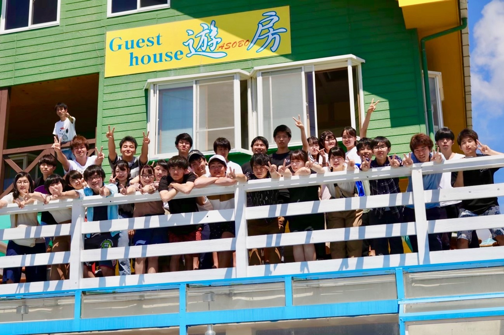

制作局紹介
制作局の役割
制作局は、明大祭を「デザイン」という観点からより魅力的なものにしていきます。明大祭の情報を伝えるWebサイトやパンフレット、キャンパスを彩る装飾物、明大祭の企画で使用される動画など、明大祭に関わる様々な「モノ」を制作しています！
Adobe
IllustratorやPhotoshopなどの、プロのクリエイターが使用するような本格的なソフトウェアを用いて制作していきます。もちろん先輩のフォローをもとに制作スキルを身に着けていくので未経験の方も安心です。普通に大学生活を送っていてはなかなか経験できないことに挑戦してみませんか？
制作局の活動内容
制作局の会議では、明大祭の成功のためにはどのような制作物が必要なのか、どうすればよりよい制作物が作れるのかといったことを話し合っています。また、制作活動にあたり必要となる写真素材を撮影するために、一眼レフカメラの使用方法や「映え」な写真を撮影するコツを学んでいます。
さらに、制作媒体によって分かれた部門ごとの会議では、より専門性を高め、媒体の持つ特徴をどう生かすか研究しています。
制作局の会議日
局会議：毎週水曜日19：00〜または21：00～（予定）
※局会議とは別に部門会議が週に1回、19：00からあります。
※部門はWebサイトを制作するWeb部門、パンフレットやポスターなどを制作するグラフィックデザイン部門、キャンパスを彩る装飾物を制作する装飾部門、明大祭に関する動画を制作する動画部門があります。
レクの様子

※2019年度のレクの様子です。
制作局では、主に2年生が中心になってレクを計画し、学年問わずほとんどの局員がレクに参加しています！
例年、お花見やディズニーランド、花火大会といった定番イベントから、富士登山や深夜にただひたすら歩く会など、珍しいイベントも企画しています。各学期の中頃に行われる合宿だけでなく、夏休みにもバーベキューや海水浴に行きます！
今年度は新型コロナウイルスの影響もあるので、時勢を見つつレクを計画していきます！